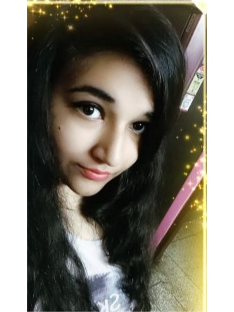

Profile

Shreya Bawari
India,Uttar Pradesh
Noida
B.Tech 2
nd
year
Uttarakhand
Email Message Posts
Maybe the journey isn't so much about becoming anything,
maybe it is about unbecoming everything
that isn't really you so you can be who
you were meant to be at the
FIRST PLACE
Follow